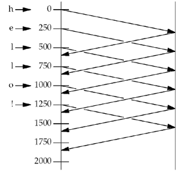
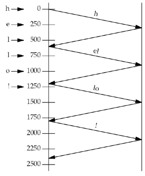

| [ Team LiB ] |
|
7.9 TCP Socket OptionsThere are two socket options for TCP. We specify the level as IPPROTO_TCP. TCP_MAXSEG Socket OptionThis socket option allows us to fetch or set the MSS for a TCP connection. The value returned is the maximum amount of data that our TCP will send to the other end; often, it is the MSS announced by the other end with its SYN, unless our TCP chooses to use a smaller value than the peer's announced MSS. If this value is fetched before the socket is connected, the value returned is the default value that will be used if an MSS option is not received from the other end. Also be aware that a value smaller than the returned value can actually be used for the connection if the timestamp option, for example, is in use, because this option occupies 12 bytes of TCP options in each segment. The maximum amount of data that our TCP will send per segment can also change during the life of a connection if TCP supports path MTU discovery. If the route to the peer changes, this value can go up or down. We note in Figure 7.1 that this socket option can also be set by the application. This is not possible on all systems; it was originally a read-only option. 4.4BSD limits the application to decreasing the value: We cannot increase the value (p. 1023 of TCPv2). Since this option controls the amount of data that TCP sends per segment, it makes sense to forbid the application from increasing the value. Once the connection is established, this value is the MSS option announced by the peer, and we cannot exceed that value. Our TCP, however, can always send less than the peer's announced MSS. TCP_NODELAY Socket OptionIf set, this option disables TCP's Nagle algorithm (Section 19.4 of TCPv1 and pp. 858–859 of TCPv2). By default, this algorithm is enabled. The purpose of the Nagle algorithm is to reduce the number of small packets on a WAN. The algorithm states that if a given connection has outstanding data (i.e., data that our TCP has sent, and for which it is currently awaiting an acknowledgment), then no small packets will be sent on the connection in response to a user write operation until the existing data is acknowledged. The definition of a "small" packet is any packet smaller than the MSS. TCP will always send a full-sized packet if possible; the purpose of the Nagle algorithm is to prevent a connection from having multiple small packets outstanding at any time. The two common generators of small packets are the Rlogin and Telnet clients, since they normally send each keystroke as a separate packet. On a fast LAN, we normally do not notice the Nagle algorithm with these clients, because the time required for a small packet to be acknowledged is typically a few milliseconds—far less than the time between two successive characters that we type. But on a WAN, where it can take a second for a small packet to be acknowledged, we can notice a delay in the character echoing, and this delay is often exaggerated by the Nagle algorithm. Consider the following example: We type the six-character string "hello!" to either an Rlogin or Telnet client, with exactly 250 ms between each character. The RTT to the server is 600 ms and the server immediately sends back the echo of each character. We assume the ACK of the client's character is sent back to the client along with the character echo and we ignore the ACKs that the client sends for the server's echo. (We will talk about delayed ACKs shortly.) Assuming the Nagle algorithm is disabled, we have the 12 packets shown in Figure 7.14. Figure 7.14. Six characters echoed by server with Nagle algorithm disabled. Each character is sent in a packet by itself: the data segments from left to right, and the ACKs from right to left. If the Nagle algorithm is enabled (the default), we have the eight packets shown in Figure 7.15. The first character is sent as a packet by itself, but the next two characters are not sent, since the connection has a small packet outstanding. At time 600, when the ACK of the first packet is received, along with the echo of the first character, these two characters are sent. Until this packet is ACKed at time 1200, no more small packets are sent. Figure 7.15. Six characters echoed by server with Nagle algorithm enabled. The Nagle algorithm often interacts with another TCP algorithm: the delayed ACK algorithm. This algorithm causes TCP to not send an ACK immediately when it receives data; instead, TCP will wait some small amount of time (typically 50–200 ms) and only then send the ACK. The hope is that in this small amount of time, there will be data to send back to the peer, and the ACK can piggyback with the data, saving one TCP segment. This is normally the case with the Rlogin and Telnet clients, because the servers typically echo each character sent by the client, so the ACK of the client's character piggybacks with the server's echo of that character. The problem is with other clients whose servers do not generate traffic in the reverse direction on which ACKs can piggyback. These clients can detect noticeable delays because the client TCP will not send any data to the server until the server's delayed ACK timer expires. These clients need a way to disable the Nagle algorithm, hence the TCP_NODELAY option. Another type of client that interacts badly with the Nagle algorithm and TCP's delayed ACKs is a client that sends a single logical request to its server in small pieces. For example, assume a client sends a 400-byte request to its server, but this is a 4-byte request type followed by 396 bytes of request data. If the client performs a 4-byte write followed by a 396-byte write, the second write will not be sent by the client TCP until the server TCP acknowledges the 4-byte write. Also, since the server application cannot operate on the 4 bytes of data until it receives the remaining 396 bytes of data, the server TCP will delay the ACK of the 4 bytes of data (i.e., there will not be any data from the server to the client on which to piggyback the ACK). There are three ways to fix this type of client:
Exercises 7.8 and 7.9 continue this example. |
| [ Team LiB ] |
|